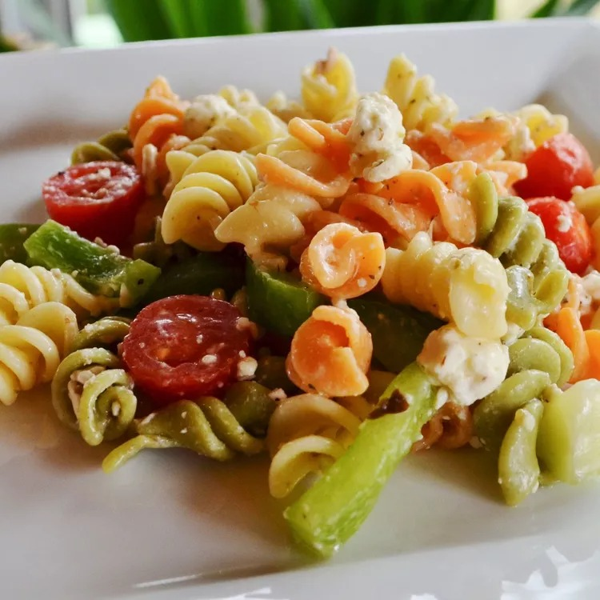

Back to Home Page
Greek Pasta Salad

Description
Use leftover pasta or store-bought prepared pasta to whip up this vibrant salad. Featuring a wealth of fresh vegetables, salty feta, and spicy pepperoni, it's all tied together with an herb-infused dressing.
Ingredients
- ½ cup olive oil
- ½ cup red wine vinegar
- 1 ½ teaspoons garlic powder
- 1 ½ teaspoons dried basil
- 1 ½ teaspoons dried oregano
- ¾ teaspoon ground black pepper
- ¾ teaspoon white sugar
- 2 ½ cups cooked elbow macaroni
- 3 cups fresh sliced mushrooms
- 15 cherry tomatoes, halved
- 1 cup sliced red bell peppers
- ¾ cup crumbled feta cheese
- ½ cup chopped green onions
- 1 (4 ounce) can whole black olives
- ¾ cup sliced pepperoni sausage, cut into strips
Steps
- In a large bowl, whisk together olive oil, vinegar, garlic powder, basil, oregano, black pepper, and sugar. Add cooked pasta, mushrooms, tomatoes, red peppers, feta cheese, green onions, olives, and pepperoni. Toss until evenly coated. Cover, and chill 2 hours or overnight.